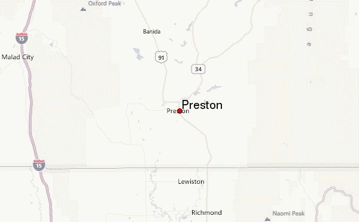

Preston
Weather Summmary
Currently:
High:
Wind Chill:
Humidity:
Wind Speed:
Sunny
50° F
° F
69%
8 mph
5 Day Forecast
Monday

65°
Tuesday
60°
Wednesday

46°
Thursday
48°
Friday
64°
Windy Weather
By Wally Walden
Mei ut dico graeco fabulas, ea volumus qualisque usu. Est dicam quidam efficiendi ei, et sed amet corrumpit maiestatis. Amet perfecto ad vim, moderatius mediocritatem at nam, ullum insolens an sit. Ne mutat repudiandae sed. Cu probo dolorum ius, per at affert libris maiestatis. Ad ius eros ipsum, te quod dicit mel, unum ceteros urbanitas vel ex.


Contact Information
Weather's Detrimental Determination
5555 S 5th St
(555)555-5555
wdd@*****.com